Dupa ce am primit cerinta, am stabilit ce pagini, respectiv sectiuni, urmeaza a fi implementate.
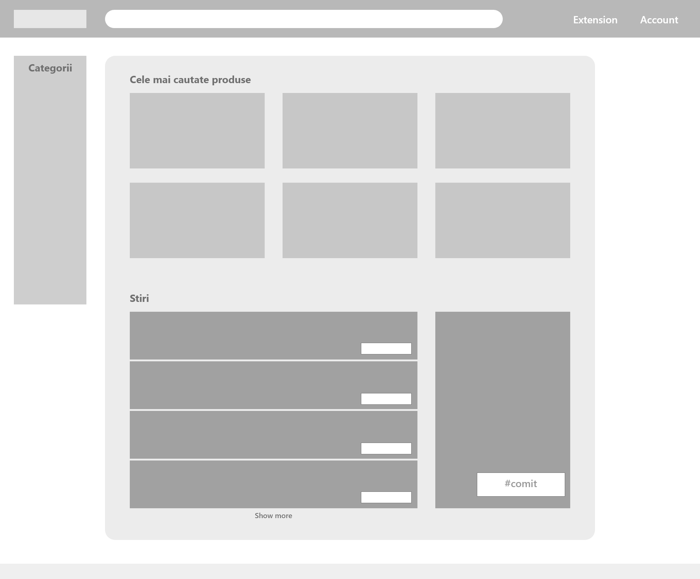 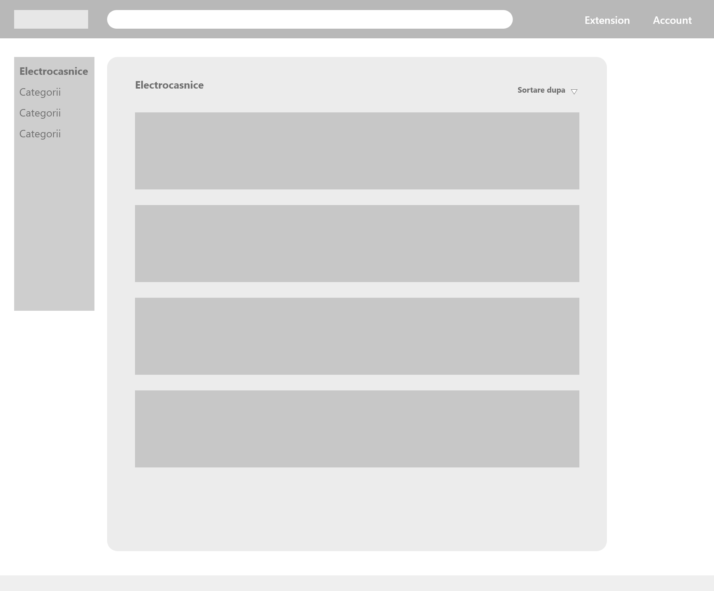 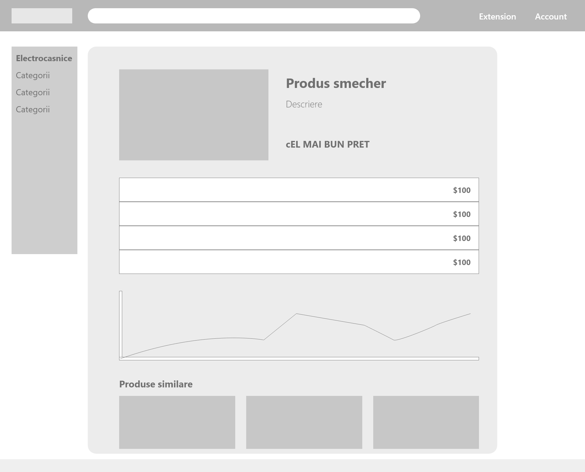 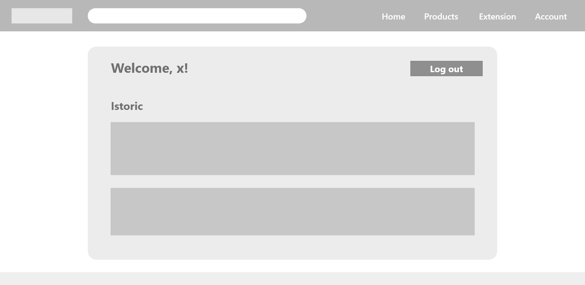Am ales sa implementam o pagina de Home, o pagina de unde poti descarca si afla mai multe informatii despre Extensie, o pagina cu Produse si o pagina pentru Contul de utilizator (Log in/Sign up/Log out).
De asemenea: un navbar sticky, prezent pe toate paginilie, cu bara de search pentru a-i fi cat mai la indemana utilizatorului sa navigheze in aplicatie.
Dupa ce am stabilit in mare elementele, am ales o schema de culori si un stil pentru aplicatia noastra, am stabilit ce informatii o sa fie afisate (pe carduri/pagina de produs), numele aplicatiei si un logo.
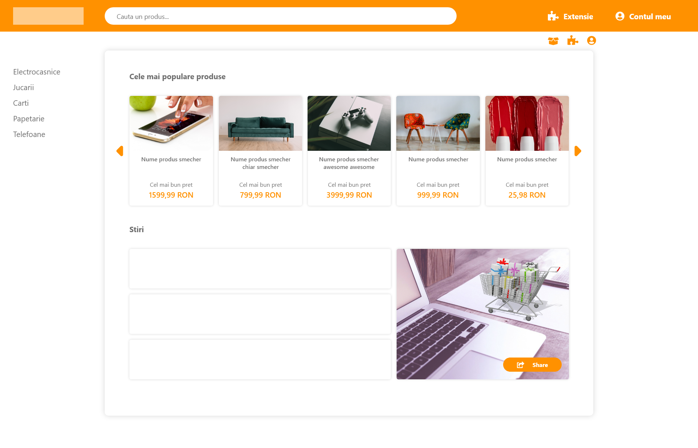 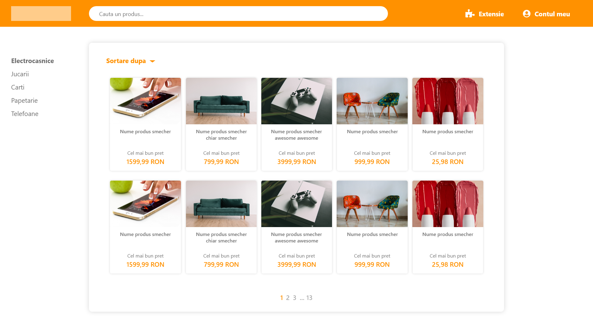 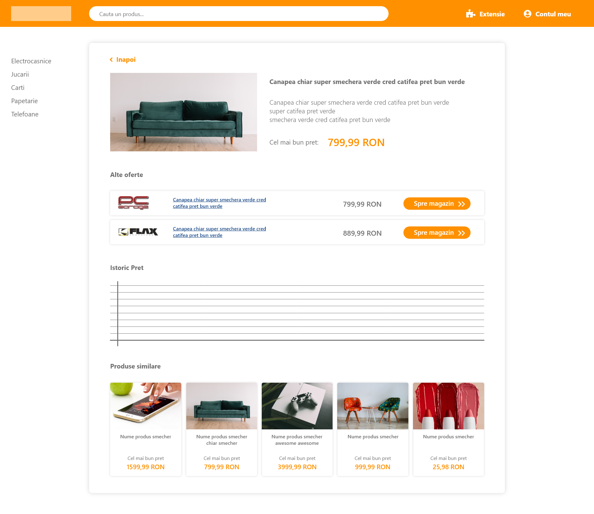 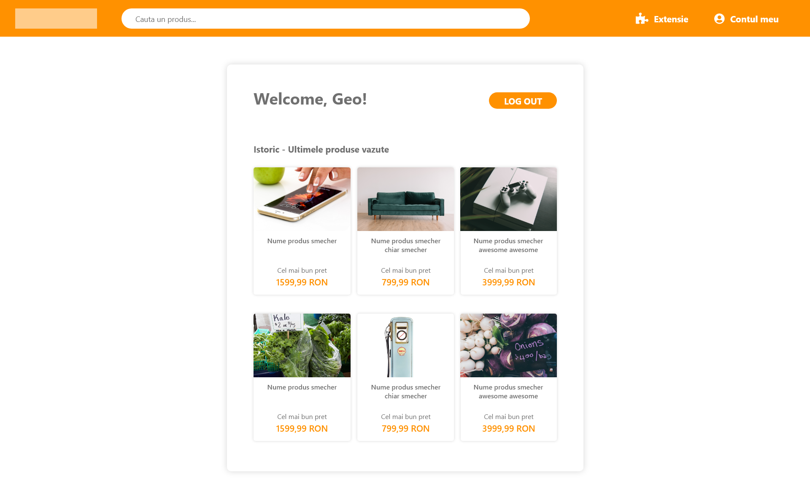Am ales portocaliu si alb drept culori pricipale deoarece portocaliul este asociat cu starea de bine, iar albul, pe langa faptul ca reprezinta curatime, permite celorlalte elemente din pagina sa iasa in evidenta - produsele.
In a treia etapa am inceput implementarea si cum era si de asteptat, au mai aparut modificari asupra designului initial.
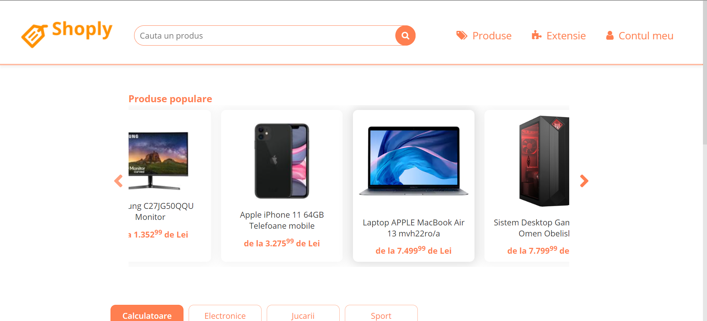 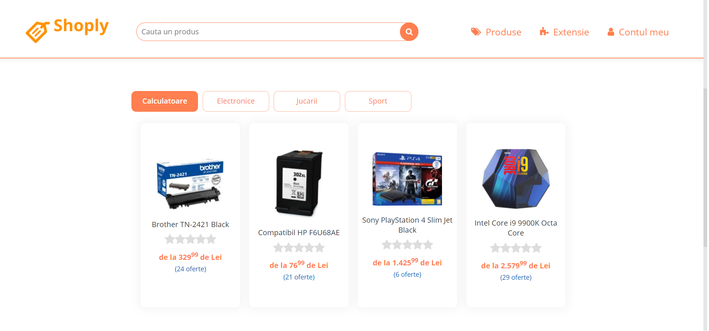 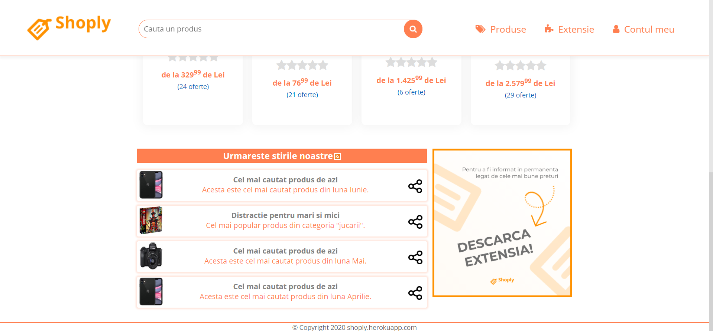 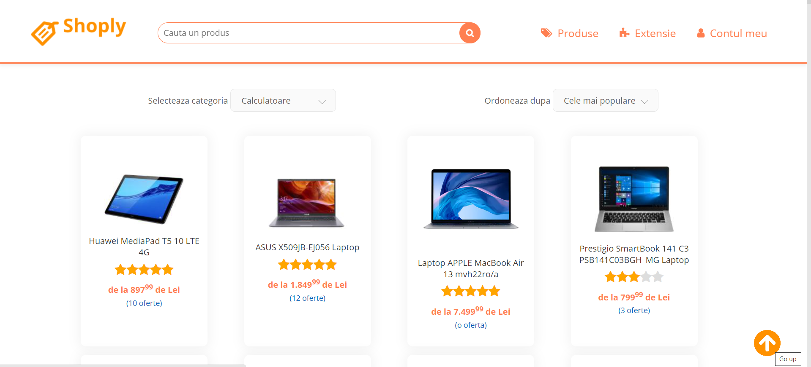 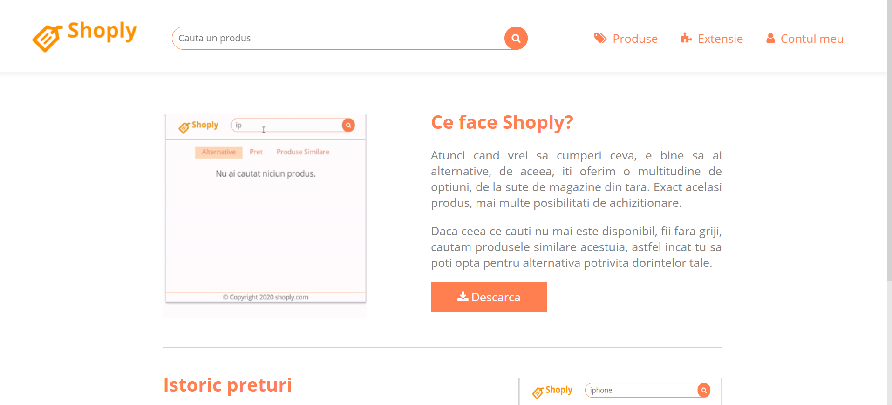 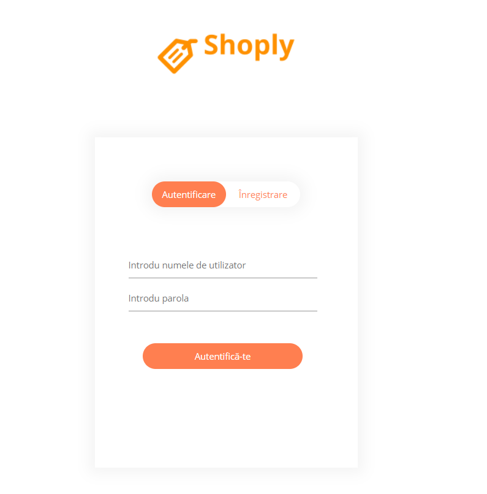 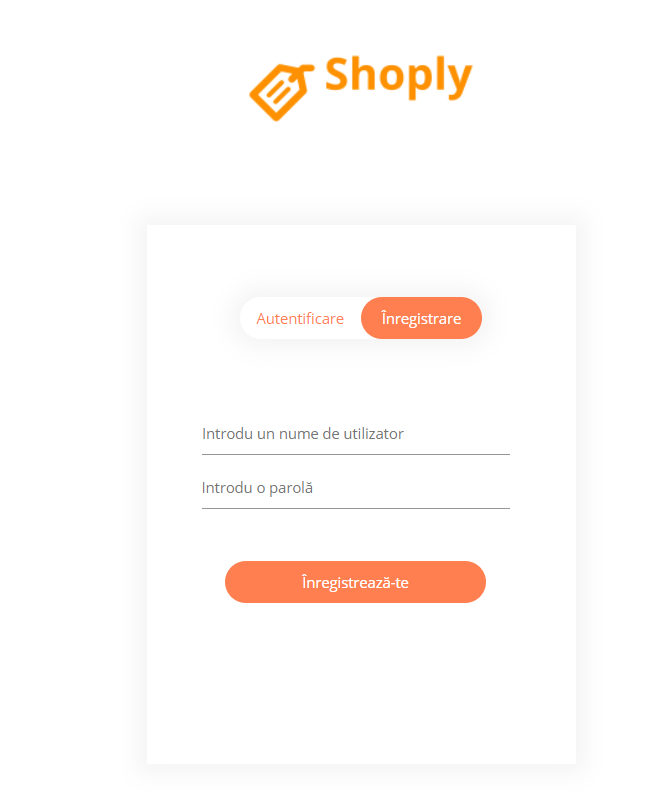Am adaugat o sectiune de produse populare, am regandit modul in care afisam produsele in pagina(ex: optiunea de sort by rating), am adaugat rating-ul si numrul de oferte disponibile pentru un produs